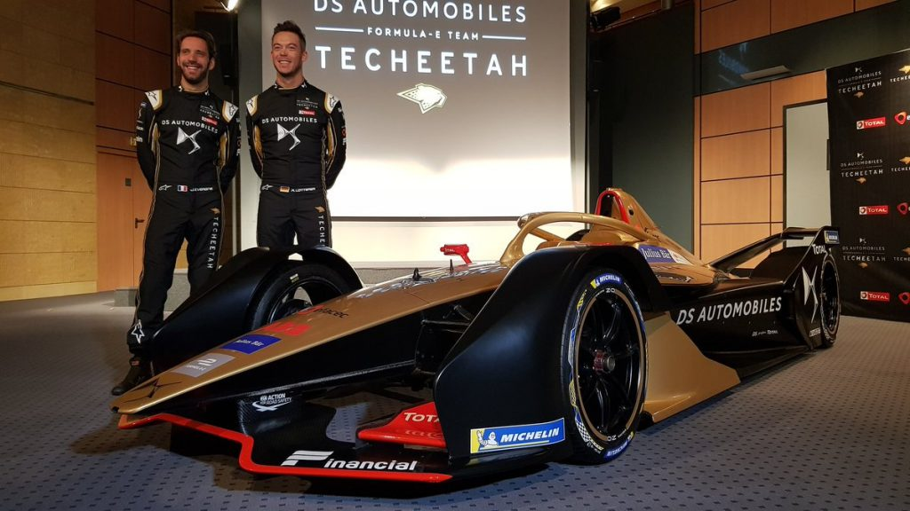

Le moteur est situé à l'arrière faisant en sorte que lors d'une collision avec un mur pris de plein fouet, la monoplace ne s'emflamme ou explose pas (surtout le cas en F1). Il a une puissance maximale de 200kW (270 cheavaux en qualifications et 241 chevaux en courses). Pour la saison 1, McLaren Electronic Technologies a produit tous les moteurs, désormais, d'autres constructeurs sont impliqués comme Audi, Renault (Nissan pour la 5ème saison), etc.
Voici le volant d'un pilote de Formule E
Les batteries sont des RESS (Rechargeable Energy Storage System) lithium-ion. Ils sont produits par Williams Advanced Engineering.
Pour la transmission, nous somme du type propulsion avec une boîte de vitesses à cinq rapports. Les commandes du véhicules sont des palettes intégrées au volant détachable de la monoplace.
Châssis (Spark SRT_01e) et carosserie
Voici le châssis d'une Formule E
Le châssis est une structure alvéolaire composé de fibre de carbone et d'aluminium. L'utilisation de ces matériaux sont principalement pour leurs résistances à la traction et à la compression, mais aussi pour leur flexibilité et leur faible densité ce qui réduit le poids de la monoplace afin d'aller plus vite plus rapidement.
La carosserie est composée aussi de fibre de carbone, mais elle est composée de kevlar qui offre une un peu moins bonne résistance que le fibre de carbone. Le kevlar est notamment utilisé pour les gilets pare-balles pour leur résistance, flexibilité et par rapport au poids de ce matériaux.
En composant la monoplace de tels matériaux qui sont résistants aux chocs pour amoindrir le contact avec un autre véhicule ou avec une paroi du circuit et la légèreté associé à ces matériaux permet à celles-ci d'être légères. Cela peut permettre aux monoplaces d'aller encore plus vite en étant tout aussi résistantes.
Roues
Les pneumatiques sont exclusivement livré par Michelin. Ceux sont des 18" scultés pour différentes conditions de circuits (sec ou pluie pour une meilleure adhérance à la piste).
Dimensions et poids
Longueur : 5 m
Largeur : 1,8 m
Hauteur : 1,25 m
Poids total de la monoplace avec le pilote et sans aucune goutte d'essence : 880 kg
Poids des batteries : 320 kg
Autres chiffres
Bruit : 80 dB équivalent à une citadine passant à 110 km/h
Autonomie : 50 km (1/2 course => changement de monoplace)
Accélération : 0-100 km/h en 3 secondes
Vitesse maximale : 225 km/h
Coûts châssis + batterie : 350 000 euros
Prix total du véhicule : 480 000 euros (par monoplace). Pour une seule course, cela s'évèle à 960 000 euros (pour 2 monoplaces)
La seconde génération

Voici la voiture seconde génération introduit par le constructeur DS Automobile pour la saison 5
Tout d'abord, elle sera utilisée pour la première fois dans la nouvelle saison (5ème). Elle permet d'améliorer la sécurité du pilote avec le halo. Mais ce n'est pas la seule innovation car en effet, une très grande amélioration a eu lieu sur l'autonomie des batteries qui permettra d'utiliser qu'une seule monoplace au lieu de 2 auparavant pour boucler entièrement le circuit. Les performances sont en hausse aussi car la puissance en course était de 200kW qui passeront à 250kW (268 chevaux). L'aérodynamique aussi réhaussé.
Question vitesse, elle prend une grande montée en passant d'une accélération de 0 à 100 km/h de 3 secondes à 2,8 secondes. La vitesse de pointe augmente très fortement d'un passage de 225 km/h à 280 km/h désormais. Elle est quand même loin du record de la Formule 1 pouvant atteindre 378 km/h... Cependant, elle pourrait peut être aller jusqu'à 300 km/h sur certaines lignes droites.
Néanmoins, le prix grimpent aussi pour une monoplace. D'un petit 480 000 euros, on arrive à 817 300 euros. Mais, cette monoplace permet de faire une course entière alors qu'avant, il en fallait deux. Il y a une économie de 150 000 euros environ.